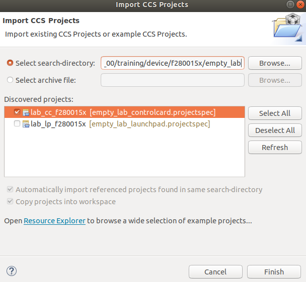
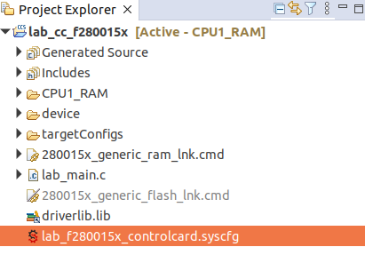
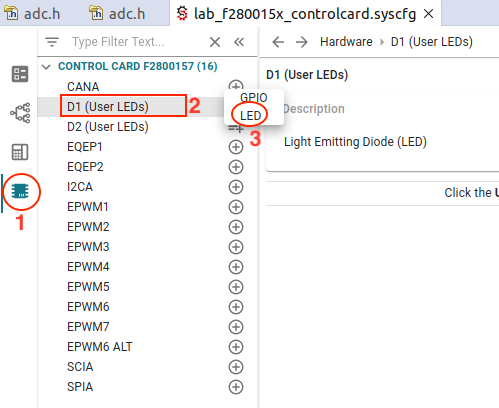
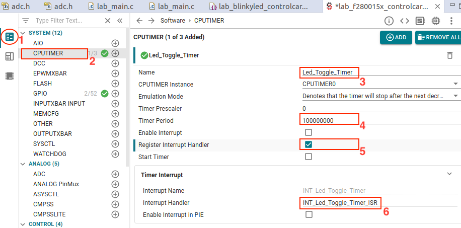

Get Started with C2000 using SysConfig#
The purpose of this lab is to help you get started with C2000 devices using SysConfig.
TI’s Code Composer Studio includes a GUI-based tool for system configuration (SysConfig). It can be used for PinMux configuration, peripheral setup, and the generation of C-code using C2000Ware DriverLib API. The generated C-code is automatically included in the project.
In this lab exercise, you will create a blinky_led example using the SysConfig GUI tool.
Solution#
All solutions are located in the directory: <c2000ware_install_path>/training/device/<device_name>.
Setup for Lab Exercise#
For hardware and software setup required for this module, refer to the Getting Started Lab. No extra setup is required for this module.
Import Empty SysConfig Project from C2000Ware#
Import empty sysconfig project from C2000Ware DriverLib examples. Go to CCS menu File → Import…
Click ‘Browse…’ button
Go to
[C2000ware Install_dir]/training/device/[device]/empty_lab.The default install folder in Windows is
C:/ti/C2000Ware_X_XX_00_00. For current device name, check your board LaunchXL, or controlCARD.Select the project corresponding to the device being used from the list of ‘Discovered Projects’. The recommended project for each device is listed below
Select
lab_cc_[device]- for controlCARDlab_lp_[device]- for Launchpad

Configure GPIO for blinky_led#
Use SysConfig User-Interface to configure the GPIO lines for LEDs. The exercise uses two LEDs on LaunchPad/controlCARD board.
Open the empty SysConfig file by double-clicking
lab_[device]_controlcard.syscfgfile in project explorer window.

Step1 : Open
Hardwaretab in the left sideStep2 : Select User LED (D1/D2 on controlCARD, LED4/LED5 on Launchpad)
Step3 : Add as
LEDtype

Now open the lab_main.c file and add the initialization code. The
Device_init()must be called to initialize the platform.
#include "driverlib.h"
#include "device.h"
#include "board.h"
//
// Main
//
void main(void)
{
// Device Initialization
Device_init();
//
// Initializes PIE and clears PIE registers. Disables CPU interrupts.
//
Interrupt_initModule();
//
// Initializes the PIE vector table with pointers to the shell Interrupt
// Service Routines (ISR).
//
Interrupt_initVectorTable();
Board_init();
//
// Enable Global Interrupt (INTM) and realtime interrupt (DBGM)
//
EINT;
ERTM;
while(1)
{
}
}
Build the project. It should build the project without any error.
CPU Timer Configuration#
Open the sysconfig GUI.
Step1: Open
Softwaretab on the left-sideStep2: Add CPU timer by pressing ‘+’ next to
CPUTIMERStep3: Add the timer name as : Led_Toggle_Timer
Step4: Timer Period as 100000000
Step5: Enable interrupt
Step6: Add Interrupt Service Routine as default name
INT_Led_Toggle_Timer_ISR.

Add timer handler code in the main source file. Make sure that the interrupt handler function name is same as provided in the sysconfig parameter in picture above.
__interrupt void INT_Led_Toggle_Timer_ISR(void)
{
GPIO_togglePin(myBoardLED0_GPIO);
GPIO_togglePin(myBoardLED1_GPIO);
Interrupt_clearACKGroup(INT_Led_Toggle_Timer_INTERRUPT_ACK_GROUP);
}
Build the project and run the code on the target board. The LEDs should toggle.
Terminate Debug Session and Close Project#
The ‘Terminate’ button will terminate the active debug session, close the debugger, and return Code Composer Studio to the CCS Edit perspective view.
Click: Run → Terminate or use the Terminate icon:
Next, close the project by right-clicking on project the Project Explorer window and select
Close Project
Full Solution#
Full solution of the lab excersice is available in C2000Ware SDK. Import the project from location
listed below. The path is: <c2000ware_install_path>/training/device/<device_name>/getting_started/lab_binkyled_sysconfig.
Feedback
Please provide any feedback you may have about the content within C2000 Academy to: c2000_academy_feedback@list.ti.com